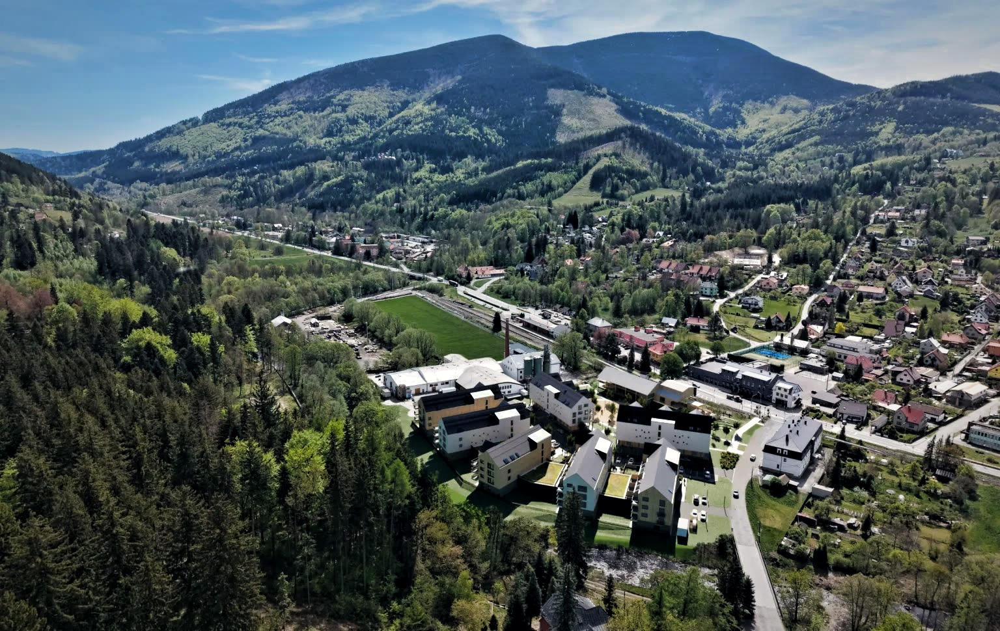
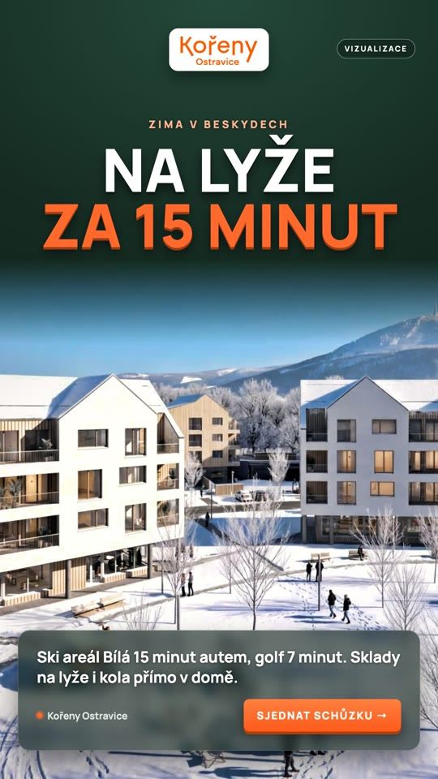
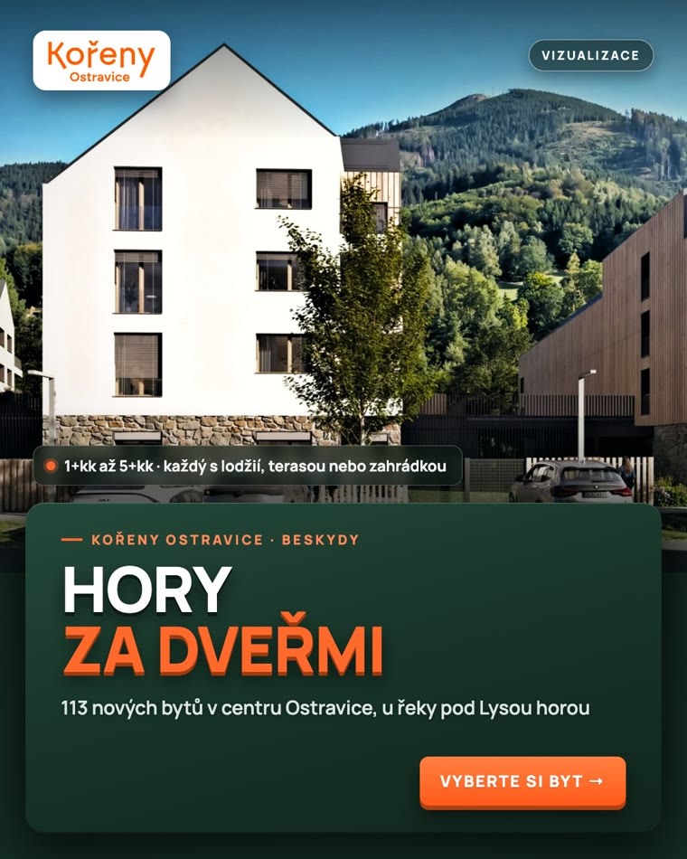
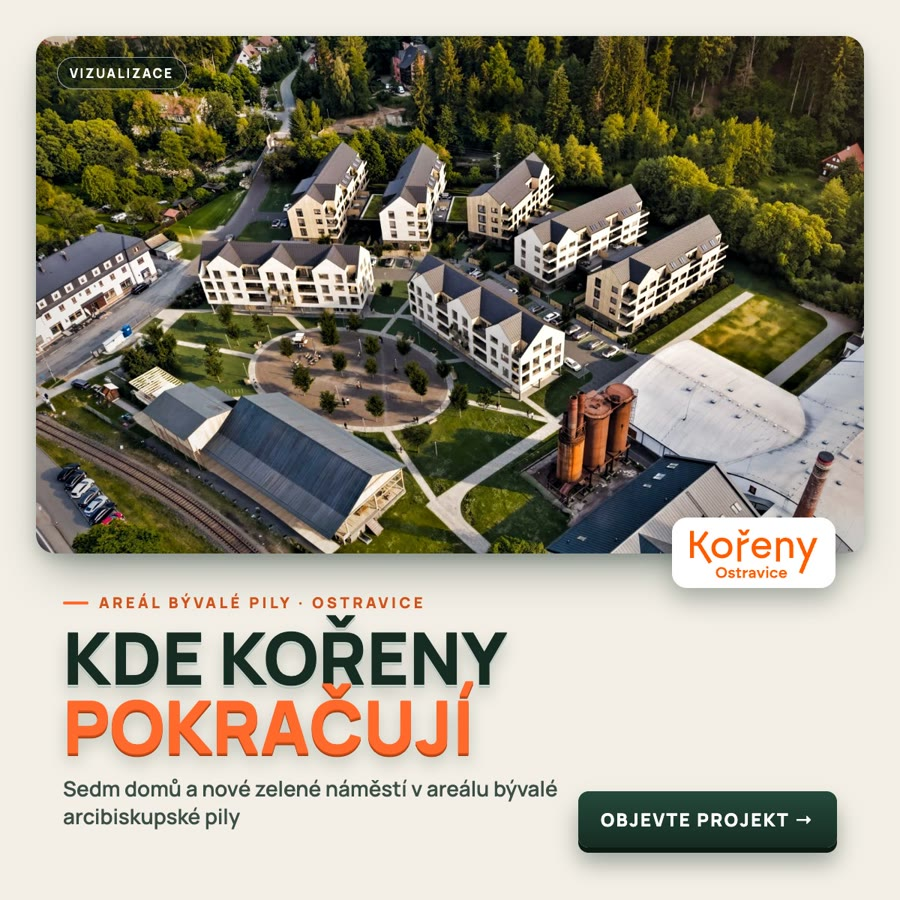
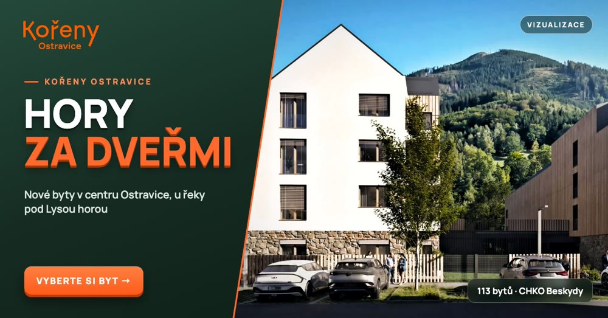

Prodej 1. etapy běží a stavba teprve začíná, hotové domy proto ukážou jen vaše rendery a animace. Ty jsou kvalitní. Na webu z nich máte 9 krátkých smyček (5–24 s, bez zvuku, jen na šířku), ale film s příběhem, lidmi a verzemi na výšku zatím chybí. Vlastní video projektu jsme nenašli ani na YouTube.
Byty stojí za metr zhruba o třetinu víc než novostavby v Ostravě. Kupující tedy neplatí za metry, ale za místo: řeku, Lysou horu, obec a příběh pily. To natočíme a vaše rendery nebo 3D model zasadíme přímo do záběrů dnešní stavby.
Každé číslo má zdroj. Do filmu a reklamy půjdou jen údaje, které potvrdíte.
Kolegyně z prodeje vystoupí jako skutečná osoba za firmu, ve vstupech do kamery jako pan Prokůpek v Dalešicích. Kupující ji pak potká na schůzce.
Rodinu, pár a aktivní seniory obsadíme buď AI komparzem přímo do záběrů Beskyd (vždy se štítkem), nebo skutečným komparzem z regionu. AI komparz nemusí stát hodiny na sněhu a přizpůsobíme ho cílovým skupinám. Co zvolíte, domluvíme se. Když přivedete vlastní lidi, vůbec nebráníme.
Celým filmem provede profesionální voice-over, ten zařídíme.
Sníh, lyže a Lysá hora v zimě, k tomu sedí váš zimní render. Sníh v údolí neleží celý měsíc, proto počítáme se dvěma dny a den vybereme podle předpovědi. Zimní Beskydy navíc už máme v archivu: běžkaře z Velkých Karlovic a zasněžené lesy z okolí.
Zelené Beskydy, řeka, kolo a turistika z briefu. Letní verze filmu i krátkých verzí, aby kampaň v létě neukazovala sníh. Ve variantě C v ceně, k A a B jako doplněk.
Ptáte se na doporučení formátu a scénáře. Oba návrhy mají kolem 90 sekund, klidné tempo a hudbu bez realitních klišé. Liší se tím, co nese příběh. Vybrat můžete jeden, nebo je spojit.
Od arcibiskupské pily, která fungovala až do roku 2011, k domovu dnes. Silné pro image a pro kupující, kteří chtějí bydlet „někde“, ne jen v novostavbě.
Řeka Ostravice v zimě, dron proti proudu k areálu. Ve variantě B a C se historická fotografie pily prolne do dnešního záběru ze stejného místa.
Lysá hora a zasněžené hřebeny, obec v údolí pod nimi.
Areál dnes z dronu a váš průlet hotovým areálem. V B a C zasadíme vaše rendery nebo 3D přímo do záběru dnešní stavby a areál v něm vyroste.
Interiér: průchod bytem od vstupu přes kuchyň a obývák až na lodžii. Vaše rendery a animace rozpohybujeme do jednoho průchodu.
Výhled z lodžie natočíme skutečně, dronem ve výšce patra, na hřebeny a Lysou horu.
Život: rodina na sněhu, pár v kavárně, senioři na procházce u řeky. Střídáme je s vašimi animacemi s lidmi v bytech.
Obec a dostupnost: vlak, obchod, škola, cesta do Ostravy. V B a C animovaná 3D mapa s minutami.
Večer: rozsvícená okna za modré hodiny a interiér z vaší animace. Logo, cena od, web.
Den od rána do večera. Silné pro krátké verze: každá denní doba je samostatný klip na Shorts a sociální sítě.
Světlo nad Lysou horou. Když bude v údolí mlha, natočíme ji. Když nebude, umíme ji do záběru dodělat.
Ranní světlo v ložnici, káva na lodžii z vaší animace.
Lyže a běžky, sníh, rodina venku.
Obec: kavárna, obchod, nádraží a vlak do Ostravy.
Procházka podél řeky k areálu a nové náměstí z vašeho renderu.
Lyže do skladu na patře, pak průchod bytem přes kuchyň do obýváku. Vaše rendery rozpohybujeme do jednoho průchodu.
Rozsvícená okna domů za modré hodiny z vašeho renderu, rodina doma z animace.
Logo, claim, cena od, web.
Konkrétní scénář, texty a plán natáčení připravíme po výběru varianty a schůzce na místě. Rádi přijedeme.
Film o druhé etapě 48 bytů ve Slaném vznikl stejně jako ten váš: stavba teprve začínala, a přesto film ukazuje hotový dům, park a dojezdy. Klikněte na náhled a film se pustí.Filmy jsou proklikávací ve webové verzi nabídky.
Video má podle briefu přivést kupující na web a do prodeje. Proto z něj neděláme jen krátké verze, ale celou sadu pro kampaně v Google Ads: vyhledávání, obsahová síť a YouTube. Tři myšlenky A/B/C, každá na šířku i na výšku, a k nim bannery ve všech rozměrech. Takhle by mohly vypadat. Připravili jsme je k této nabídce z vašich renderů, texty jsou jen z vašeho webu a briefu.




A · Hory za dveřmi pro rodiny a páry z Ostravy a Frýdku-Místku. B · Kde kořeny pokračují pro image a investory. C · Na lyže za 15 minut pro kupující druhého bydlení v horách.
Každý formát má jiné rozvržení, barvy a logo drží celou sadu pohromadě. Ukázka 1200×628 je pro YouTube a obsahovou síť.
Každá myšlenka běží 2 týdny ve všech kanálech. Pak necháme dvě s nejnižší cenou za poptávku (formulář, telefon) a nejslabší nahradíme novou.
cca 9 100 Kč měsíčně. Otestuje A/B/C a ukáže, která myšlenka funguje.
cca 18 200 Kč měsíčně. Běh na 2–3 měsíce prodeje.
cca 30 400 Kč měsíčně. Start prodeje etapy a silná viditelnost v kraji.
Rozpočet na reklamu platíte přímo Googlu, k nám nejde. Nastavení kampaní obsahuje varianta C, k A a B je jako doplněk za 4 900 Kč. První měsíc správy je zdarma, pak 900 Kč měsíčně. Krátké verze dostanete ve všech variantách na šířku (Facebook, Google Ads) i na výšku (Instagram, Shorts). Když budete chtít pomoct i s kampaněmi na Facebooku a Instagramu, domluvíme se.
Ceny jsou orientační a bez DPH. Hodně záleží na vašich podkladech: když půjdou animace, rendery a 3D použít, jak jsou, bude cena nižší. Čím víc toho budeme muset dotvořit, tím blíž k uvedené částce. Přesnou cenu potvrdíme, až podklady uvidíme. Natáčení v lednu je ve všech variantách stejně dlouhé, fotky a voice-over jsou v ceně vždy.
Zaškrtněte, co vás zajímá, a my to uvidíme. Fotky z natáčení a voice-over jsou v ceně všech variant. Ceny bez DPH.